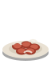

Cozinhachapa · fritadeira · meta 12 min
6 pedidos1 passou da meta3 no passe23:14
Fazer agora · por pratoporções
Fritas4
Fritadeira 1 · cesto cheio = 2P37P08P25 ×2
 Bolinho3
Bolinho3P22 ×2B4

Calabresa2P41P12
Torresmo1
Fritadeira 2P44
Por pedido · mais antigo primeiromontar e soltar
P22Calçada
2 Bolinho de bacalhau
Galera da 2213:10
P08Imóvel 2
1 Fritas · 1 Calabresa
Renata9:22
P25Calçada
2 Fritas
Turma do Vasco6:15
P41Rua
1 Calabresa
Carlos Mecânico4:10
P37Rua
1 Fritas NOVO
João da Oficina0:31
No passe · esperando garçom3
P12
1 Calabresa
Ninguém pegou · 3:40
B4
1 Bolinho
Esperando · 1:20
P44
1 Torresmo
Carlos levando
Prato no passe vira tarefa no celular dos garçons da área. Quem pegar aparece aqui em azul.